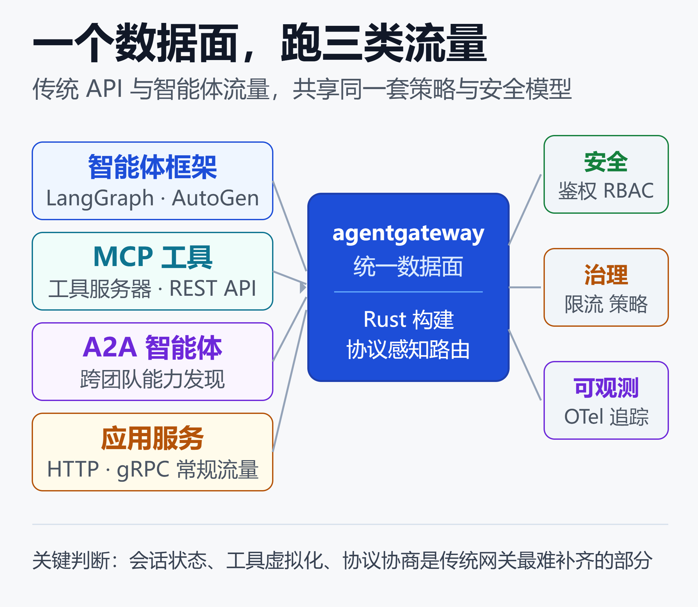
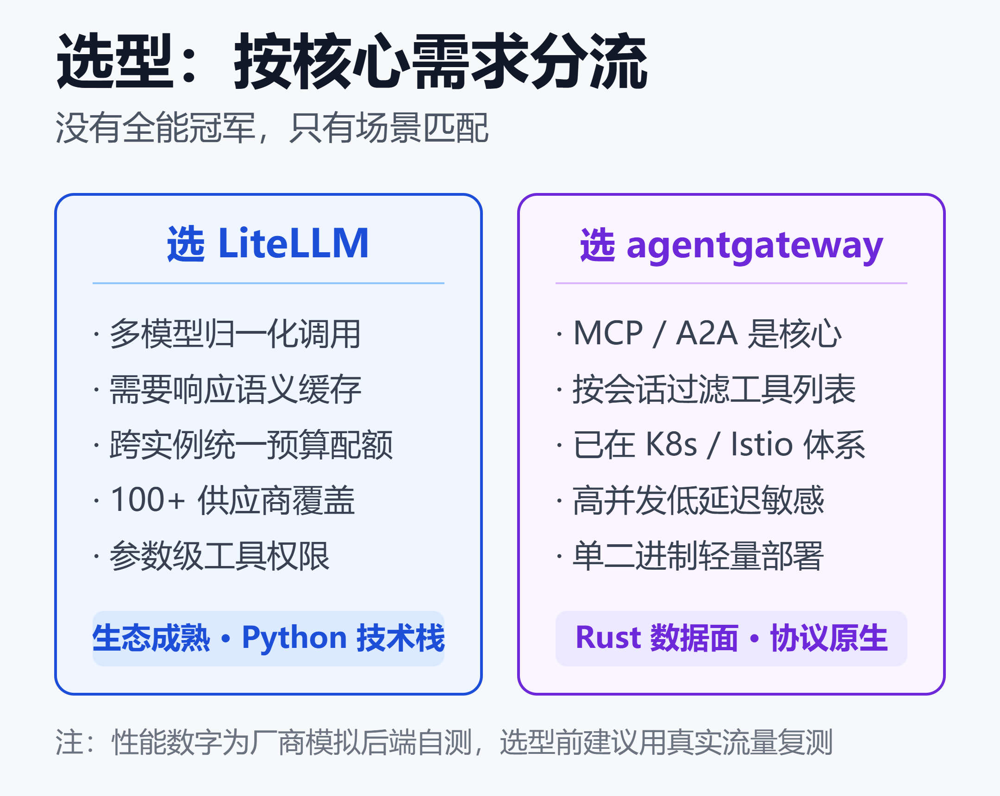

比 LiteLLM 快 11 倍、省 500 倍内存：agentgateway 的性能神话能信几分
序言：一个数字引发的争论
36,933 对比 3,198。
这是 2026 年 6 月一组 AI 网关基准测试里的吞吐量数字，单位是每秒请求数。前者是 agentgateway，后者是 LiteLLM——当时开源 AI 网关领域最常被提到的名字。
同一组测试里，内存占用是 29MB 对比 11.8GB，P99 延迟是 1.97ms 对比 32.19ms。换算下来，吞吐快约 11.5 倍，延迟低约 10 倍，内存省约 500 倍。
这组数字在开发者社区迅速传播，也迅速引来质疑：一个用 Rust 写的代理，真能把 Python 生态里最成熟的网关甩开这么远？测试是不是自己跑的？后端是不是真实的？换到生产环境还成立吗？
下文把这些问号逐项拆开。数字背后是一个从 Solo.io 捐给 Linux 基金会、如今挂在 Agentic AI Foundation 下的开源项目，也是一套试图重新定义"网关"边界的架构思路。
先说结论：这组数字方向可信，但不能直接当成生产环境的性能承诺。它测的是代理本身的开销，不是模型推理的耗时。真正值得关注的，是 agentgateway 为什么要把 HTTP、gRPC、LLM、MCP、A2A 塞进同一个数据面——这个选择解决了什么问题，又带来了什么代价。
一、先把数字的口径讲清楚
判断一个基准测试是否可信，先看三件事：测什么、怎么测、谁在测。
测什么：这组对比用的是一个"瞬时返回固定响应"的模拟模型后端。它的目的很明确——把模型推理时间剥离掉，只测两个代理各自引入的额外开销。所以 36,933 QPS 描述的是"代理转发有多快"，不是"接了大模型之后系统有多快"。
怎么测：负载由 Fortio 生成，32 个并发连接，1KB 请求载荷，每组跑 3 秒。这是典型的微基准配置，短时间、高并发、小载荷，适合放大代理之间的差距。
谁在测：测试由 agentgateway 团队发布，脚本和原始数据公开在仓库里。同一作者还做了两组后续测试——一组把双方都固定在 3,000 QPS，一组针对 LiteLLM 的 Rust 模式重跑。这个"主动补做公平对照"的动作，比单次跑分更有参考价值。
需要特别标注的局限有三条：后端是模拟的、测试由项目方自己执行、官方博客没有写明代理运行的具体硬件。
把这些放在一起，正确的读法是：这组数字说明 agentgateway 作为代理"很轻、很快"，方向性可信；但它不能证明在真实模型负载下的端到端收益。
| 指标 | agentgateway | LiteLLM |
|---|---|---|
| 吞吐 | 36,933 QPS | 3,198 QPS |
| P99 延迟 | 1.97ms | 32.19ms |
| 峰值内存 | 29MB | 11.8GB |
数据来源：agentgateway 官方基准测试，模拟后端、32 并发、3 秒，厂商自测口径。
第三方评测给出了另一个角度的交叉验证。TrueFoundry 用 1 vCPU 的容器跑同样口径的对比，结论方向一致：agentgateway 每请求增加约 2–5ms，LiteLLM 在轻载下增加约 12–15ms；前者空闲内存约 18MB，后者在 10 QPS 时已到约 1.2GB。
一家独立机构用不同环境复现了同样的方向，这比数字本身的绝对值更重要。
二、它是什么：从 Solo.io 到 Linux 基金会
agentgateway 对外标榜"面向智能体 AI 的首个完整连接方案"。一句更务实的理解是：它是一个用 Rust 写的开源代理，把 LLM 调用、MCP 工具连接、A2A 智能体通信，和普通的 HTTP/gRPC 流量，放进同一个网关。
项目由 Solo.io 创建，仓库于 2025 年 3 月建立，同年捐给 Linux 基金会。2026 年 3 月发布 v1.0，同时把 Kubernetes 控制器收进项目自身，从 kgateway 的发布周期里独立出来。2026 年 6 月，它成为 Agentic AI Foundation（AAIF）旗下第四个托管项目，与 MCP、goose 等项目同处 Linux 基金会的 Neutral 治理框架下。
目前项目采用 Apache 2.0 许可，GitHub 星标约 6.2k。AAIF 公告称有来自 60 多家机构的 300 多位活跃贡献者，包括 CoreWeave、Red Hat、Adobe、Salesforce、微软和 Solo.io。截至 2026 年 11 月，最近一次发布是 10 月的 v1.7.0，90 天内上百次提交，项目处于活跃状态。
技术血统是理解它的另一条线索。官方资料提到，团队曾评估基于 Envoy 改造，但认为支持 MCP 和 A2A 需要对 Envoy 做大规模重构，于是选择全新构建；核心设计经验来自团队在 Istio ambient 服务网格和零信任隧道 ztunnel 上的三年生产实践。
这解释了为什么它一上来就把多租户、会话状态和长连接性能放在优先级最前面——这是服务网格的老问题，只是换到了智能体场景。
三、传统网关为什么接不住 MCP
这不是"AI 功能加个插件"就能解决的事。MCP 和 A2A 的流量模型，和传统 REST API 有本质区别。
| 维度 | 传统网关 | agentgateway |
|---|---|---|
| 会话 | 无状态请求 | 有状态长会话 |
| 方向 | 客户端发起 | 服务端可推送 |
| 工具 | 静态映射 | 动态虚拟化 |
传统 API 网关为短生命周期的 HTTP 请求优化：一个请求进来，选一个后端，一个响应出去，不需要记住上下文。而 MCP 是基于 JSON-RPC 的有状态协议，请求与响应必须绑定在同一个会话里，服务端还能通过 SSE 主动回推消息。
几个具体场景最能说明差距。
客户端发来一句"列出可用工具"，网关可能需要扇出到多个后端 MCP 服务器，聚合成统一视图再返回。不同客户端对工具的权限不同，返回的工具列表必须按会话动态过滤。MCP 和 A2A 规范还在演进，协议升级和降级需要优雅协商。工具本身还可能被投毒——篡改、影子替换、事后变卦，都需要在网关层拦截。
这些都不是"选个后端转发"能覆盖的。agentgateway 的解法是把协议感知做进数据面：理解 JSON-RPC 消息体、维护会话亲和、按客户端虚拟化工具列表、在策略层校验工具来源。

图片说明：无论来自智能体框架、CLI 还是传统应用，LLM、MCP、A2A 与普通 API 流量都汇入同一个数据面，共享鉴权、策略、限流与可观测能力。
架构上的关键取舍是"一个数据面"。官方反复强调，团队不希望运营方并行维护"常规网关"和"AI 网关"两套基础设施——同一套策略、同一套安全模型、同一套可观测流水线，应该同时管住微服务 API 和智能体流量。
四、一个数据面，跑三类流量
把能力拆开看，agentgateway 实际扮演五个角色。
LLM 网关：用统一的 OpenAI 兼容端点，对接 OpenAI、Anthropic、Gemini、Bedrock、Azure 等主流供应商，以及任何兼容 /v1/chat/completions 的自托管端点。提供模型别名、按请求和按 token 的限流配额、预算控制、负载均衡与故障转移。v1.6 的配置支持七种内置 provider 类型和十四种预设。
简化后的配置很直白，几行就能把流量切到指定模型：
llm:
models:
- name: "*"
provider: openAI
params:
apiKey: "$OPENAI_API_KEY"
MCP 网关：把 LLM 连到工具和外部数据源，支持 stdio、HTTP、SSE、Streamable HTTP 多种传输，支持工具联邦和 OpenAPI 集成。一个实用能力是把任意 OpenAPI 规格即时暴露成 MCP 工具，无需改动后端代码。安全侧包含 OAuth 认证、对动态请求的后端 URL 做校验和沙箱化，用来阻断影子 MCP 访问。
A2A 网关：面向智能体之间的通信，提供能力发现、模态协商和跨边界任务协作。
推理网关：对接自托管模型池，实现 Kubernetes Inference Gateway 扩展，按 GPU 利用率、KV cache、LoRA 适配器和队列深度做路由。官方文档给出的一组数据是：8 台 vLLM 服务器跑 Qwen3-32B、共 16 张 H100，在 60 QPS 下经过网关路由，输出吞吐从 6,910 提升到 16,178 token/s，首 token 中位延迟从 62.9 秒降到 0.1 秒。需要注意，那组测试里 Service 基线已过载，且每种配置只跑了一次。
治理与可观测：JWT、API Key、OAuth 认证，基于 CEL 表达式的细粒度 RBAC，限流、TLS、mTLS、CORS，以及原生 OpenTelemetry 指标、日志和追踪。策略可以挂在监听器、路由或后端三个层级。
对智能体基础设施感兴趣，可以延伸阅读 AI Agent治理与可观测性：企业落地的隐藏成本，里面详细拆过治理层为什么会被单独抽出来。
五、数字背后的工程账
性能差距不是凭空来的。v1.0 的两项改动很能说明这个项目的取向。
第一项是 CEL 2.0。团队重构了策略表达式引擎，单个 CEL 表达式快了 5 到 500 倍，部分测试里端到端代理性能提升超过 50%。这类优化对普通 API 网关意义有限，但对"每个请求都要跑一遍授权和工具过滤"的智能体网关，是核心路径上的开销。
第二项是 PreRouting 阶段支持。认证和授权可以在路由选择之前执行，于是能根据请求体内容、Header 或 JWT 声明，把流量导向不同模型——全部在代理内部完成，不需要外部处理器。官方测试里，相比基于 Istio 的外部处理器方案，吞吐提升约 4.5 倍，P50 延迟下降约 4.5 倍。
更早的 Gateway API 基准测试则从另一个维度展示了资源开销。在路由规模测试中，agentgateway 数据面的 CPU 占用低于 1%、内存从 4MB 增长到 40MB；对照的 Envoy Gateway、Istio 和 NGINX，CPU 占用在 20% 到 240% 之间，内存从 60–90MB 起步，增长到 1–2GB。
这些测试都由项目方或相关贡献者执行，应视为方向性证据。但结论本身是稳健的：用编译型语言重写数据面，在长连接和高并发场景下，确实能把代理开销压到很低的量级。
推理框架的选型逻辑可以参考 大模型推理框架选型2026：vLLM、SGLang、TensorRT-LLM、Ollama、Xinference五大框架怎么选，agentgateway 的推理路由正是建立在这类自托管框架之上。
六、LiteLLM 还强在哪
如果只看跑分，很容易得出"全面碾压"的结论。但实际的选型决策要复杂得多。LiteLLM 在至少五个维度上仍然占优。
响应缓存。LiteLLM 提供精确匹配和语义缓存，后端支持 Redis、Valkey、Qdrant、S3 等。agentgateway 目前没有内置响应缓存，重复的客服类请求会照价付费，除非自行在外部加一层。
供应商覆盖。LiteLLM 宣称支持 100 多家供应商，路由策略也更多，包括按成本和按延迟路由；预算作用域划分更细，可观测集成更丰富。agentgateway 的内置类型加预设约为二十余种，虽然兼容任何 OpenAI 格式的端点，但开箱覆盖明显少于前者。
跨实例状态。LiteLLM 把状态放在 Postgres 和 Redis 里，预算和限流在所有副本之间统一生效。agentgateway 的免费控制能力局限在单实例范围。
权限粒度。LiteLLM 可以细化到"允许调用某工具，但禁止传入某个参数"，并在六个身份层级上叠加权限。agentgateway 的规则目前工作到工具级别。
社区规模。LiteLLM 星标超过 6 万，遇到问题大概率有人踩过坑；agentgateway 约 6.2k，文档更新也存在滞后于代码的情况。
此外，agentgateway 的推理路由依赖 Kubernetes Inference Gateway 扩展，主要适用于 K8s 环境；自研的 xDS 动态配置模型也有学习曲线。想要开箱即用的仪表盘和 Guardrails，Kong AI Gateway 或 Portkey 这类产品化更成熟的选择也值得纳入比较。
关于 LiteLLM 的完整能力拆解，见 LiteLLM 深度调研：用一个开源网关统一 100+ 大模型的完整实战指南。

图片说明：以归一化调用为主、MCP/A2A 为辅的场景，LiteLLM 仍是更快路径；以智能体协议流量和平台层治理为核心、且已在 K8s 体系内的场景，agentgateway 更贴合。
七、什么场景该选谁
把上面的取舍落到具体场景，可以避免大多数选型失误。
场景一：多模型归一化 + 预算管控。团队主要需求是用一个接口调用几十家模型、按团队分预算、做故障切换，MCP 只是偶尔用用。这种场景下 LiteLLM 是最短路径——生态成熟、教程充足、缓存和成本策略完备。
场景二：MCP 工具与智能体互联是架构核心。组织内已有大量工具服务器，需要按会话控制工具可见性、校验工具来源、留存完整的调用审计，并且要连接不同团队用不同框架构建的智能体。agentgateway 的协议感知能力在这里才真正发挥价值。
场景三：已在 Kubernetes/Istio 体系内。如果平台团队已经在用 Gateway API 管理流量，agentgateway 的控制器和 CRD 能无缝接入既有运维模型；推理路由、mTLS、多租户这些能力也只有在 K8s 环境下才能完整使用。
场景四：本地轻量开发代理。单个开发者想用一个二进制管理自己的 LLM 密钥和用量，又不想背后挂数据库和 Redis——agentgateway 的单文件部署优势明显，内存占用只有几十 MB。
需要提醒的是，网关解决的是"跨边界流量的安全与治理"，它和框架内部的多智能体任务分发是两件事。协议本身的定义见 MCP vs A2A：重塑 AI Agent 生态的两大协议深度解析 - AI知识宇宙 - 用AI采集，用AI生成，部署层面的完整路径见 企业AI Agent部署实战：从0到1600个Agent的落地路径。
小结
回到标题的问题：性能神话能信几分？
结论可以分三层。
数字本身：11.5 倍吞吐、10 倍低延迟、500 倍省内存，方向可信，但不代表生产环境的端到端收益——因为测量剥离了模型推理，且全部由厂商自测。第三方在不同硬件上复现了同样的方向，这才是更值得记住的信号。
能力本身：agentgateway 的真正差异不是跑分，而是把 LLM、MCP、A2A 和普通 API 收进同一个数据面，把会话状态、工具虚拟化、协议协商和按会话授权做成一等公民。这是传统 API 网关改造起来成本极高的部分。
选型本身：如果需求是"一个接口罩住一百家模型"，LiteLLM 仍然更省事；如果需求是"管住跨团队、跨边界的智能体流量"，agentgateway 是当前少数认真解决这个问题的开源基础设施。项目仍年轻，文档和部分功能有待补齐，上线前建议用自己的真实流量复测一遍。
免责声明
本文基于公开资料整理，涉及的性能数字来自项目官方博客和第三方评测，测试条件已在文中标注。基准测试结果受硬件、负载模型和配置影响，不构成任何性能承诺或选型保证。开源项目功能迭代较快，具体能力请以官方文档和对应版本为准。文中提及的公司与项目名称仅用于技术说明，不构成推荐或投资建议。
参考来源
- GitHub —— agentgateway/agentgateway 官方仓库
- GitHub —— agentgateway README 原文
- agentgateway 官方文档 —— Introduction（standalone）
- agentgateway 官方文档 —— Version 1.6.x 总览
- agentgateway 官方博客 —— Benchmarking agentgateway vs LiteLLM
- agentgateway 官方博客 —— A Year In: agentgateway Hits v1.0.0
- Agentic AI Foundation —— agentgateway Joins AAIF
- TrueFoundry —— agentgateway (formerly Gloo AI Gateway): an honest review
- TrueFoundry —— LiteLLM vs agentgateway
- AgentIndex —— agentgateway 项目活跃度与版本记录
- 龙虾智能体百科 —— Agent Gateway（智能体网关）
相关阅读
- LiteLLM 深度调研：用一个开源网关统一 100+ 大模型的完整实战指南
- MCP vs A2A：重塑 AI Agent 生态的两大协议深度解析 - AI知识宇宙 - 用AI采集，用AI生成
- AI Agent治理与可观测性：企业落地的隐藏成本
- 企业AI Agent部署实战：从0到1600个Agent的落地路径
- 大模型推理框架选型2026：vLLM、SGLang、TensorRT-LLM、Ollama、Xinference五大框架怎么选
推荐搭配装备
善其事，利其器。以下硬件能最大化你的AI体验👇
🔗 通过以上链接购买可支持本站持续运营 🙏